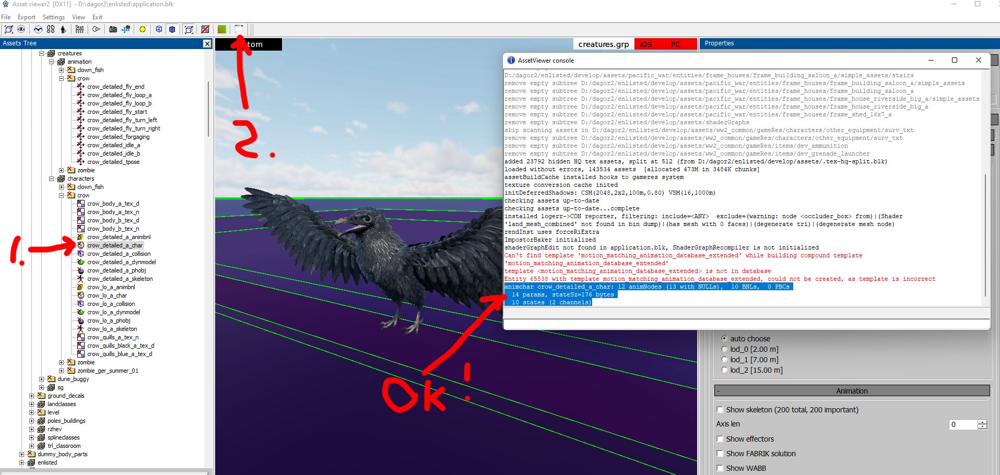
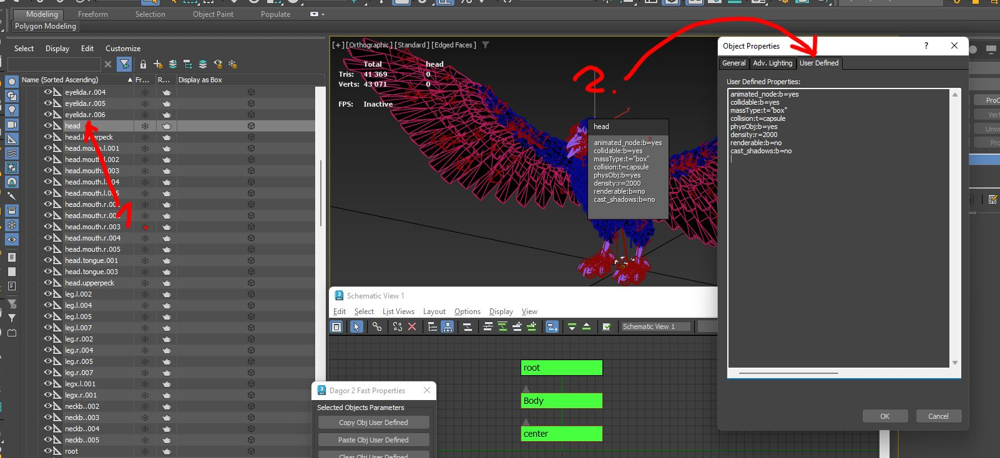
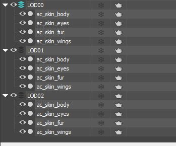
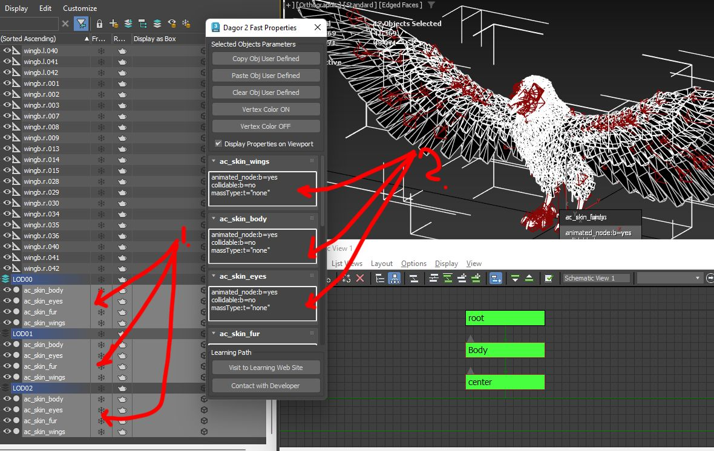
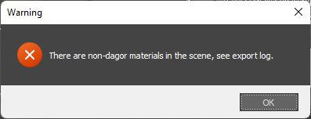
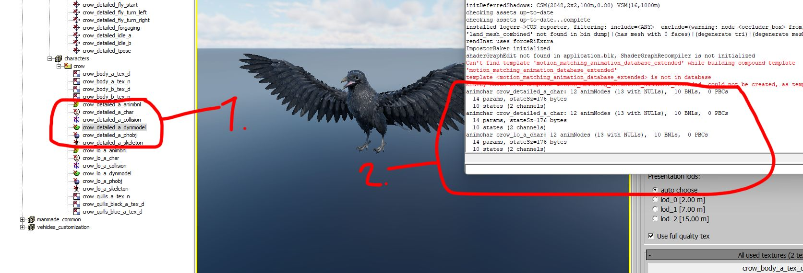
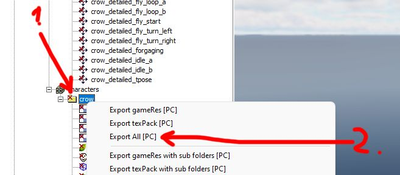
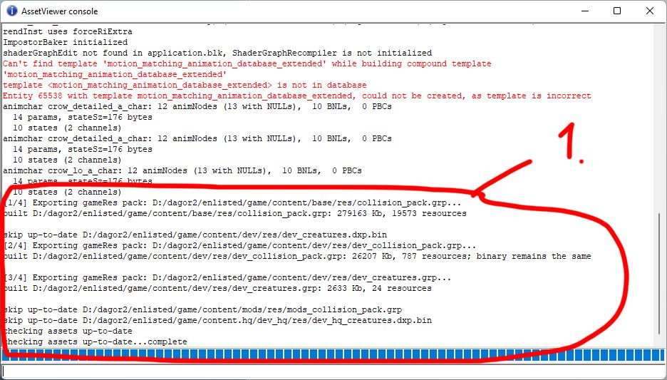

Non-Human Character
General Guidelines for Creating Creatures of All Types
The Dagor Engine supports creating any bone-animated object (character). However, this guide focuses on simple examples that do not involve IK (Inverse Kinematics), upper or lower body animations, complex animation blending, or additive animations. After reading this guide, you will be able to create characters with any number of limbs. Additionally, we will set up animation states for smooth transitions between character animations.
Example Scenes in 3ds Max
You can download scenes with models properly prepared for export:
3dsMax2024Files.zip.
Examples in Dagor Engine
These examples are designed for use in daNetGame-based projects. The files include ready-to-use game assets: a fish and a crow. Compatibility with War Thunder has not been tested due to shader-related issues.
Download the archive:
creatures.zip.
Extract the files into the dev directory of your project (a testing directory
not included in the game build). For example,
<engine_root>/<project_name>/develop/assets/dev/gameRes/. After extraction,
the path should look like this:
<engine_root>/<project_name>/develop/assets/dev/gameRes/creatures.
If everything is set up correctly, loading the Asset Viewer and selecting the crow asset 1 will result in error-free loading. Click 2 to review error logs. The highlighted section indicates successful loading.
{kind=link}
Note
Scenes are compatible with 3ds Max 2024 or later.
Skeleton Bone Structure: Features and Scene Configuration
Let’s analyze the crow scene. Open the file 0
crow_detailed_tpose.max.
{kind=link}
Make sure to specify in the file name that it is the character’s T-pose. The
model must include a root bone 3. The naming is flexible, but
if you plan to use existing .blk files as templates, it is better to name it
root. This bone is used to move the entire scene. Additionally, a Body bone
4 must be defined.
See also
For more information, see BLK File Format.
For complex models with separate upper and lower animations, different
animations may play simultaneously based on specific events. In such cases, bone
names must clearly indicate their purpose for programmers. In this example, the
same animation always applies to all bones, so Body directly follows root.
This will become crucial when defining properties for generating animation
dependencies.
Note
For more complex characters, the structure may involve actions like running while rotating the torso and looking at the camera. Such setups require advanced configurations, which are beyond the scope of this guide. Here, we focus on a simpler and more straightforward task.
The 3ds Max scene must include the following mandatory features:
LODs (Level of Detail) 2 must be named consistently, e.g.,
LOD001. Inconsistent names across LODs will cause errors during the Asset Viewer resource loading. While 3ds Max discourages identical names for objects, Dagor Engine requires this convention. To distinguish objects, place them in layers named according to their LOD levels, as shown in the example above.For the Skin modifier, always disable Dual Quaternion 6 and set the number of points per bone 5 to match the configuration specified in the project’s
application.blk. Refer to the Skin Parameters in Dagor section for more details: Working with the Skin Modifier.See also
For more information, see application.blk.
Store skinned objects as Editable Mesh 7 to ensure point weights accurately reflect in Dagor after export. These steps help replicate the Skin modifier’s behavior in Dagor precisely.
Use Selection Sets 8 for easier object selection during export. For instance, to export
LOD00, create a group namedlod00containing all the scene bones and all objects from theLOD00layer.
Each bone in the scene must include Custom Properties so that the Dagor identifies them as bones. Below is the minimum required configuration for the crow skeleton:
animated_node:b=yes // Specifies the object is animated
collidable:b=no // Disables all collisions
massType:t="none" // No mass, but the object is physical
renderable:b=no // Excluded from rendering
cast_shadows:b=no // Excluded from shadow generation
Adding Basic Physics
To initialize the scene properly in Dagor, assign physical properties to at least one bone using Custom Properties 2.
{kind=link}
Without physics, the engine cannot generate a valid skeleton. Below is an
example configuration for the head bone 1:
animated_node:b=yes // Specifies the object is animated
collidable:b=no // Enables collision handling, though further settings are required
massType:t="box" // Specifies the mass calculation type
collision:t=capsule // Specifies the collision type; consult your mentor for alternatives
physObj:b=yes // Enables physics for the object
density:r=2000 // Density for mass calculation
renderable:b=no // Excluded from rendering
cast_shadows:b=no // Excluded from shadow generation
See also
For more information, see Rigging, Skinning, and Exporting New Character.
Download example files to review the custom properties of bones like Bip*.
These properties dictate how the physical skeleton is generated.
Working with the Skin Modifier
The most critical aspect of working with the Skin modifier is controlling
the number of bones per vertex. By convention, this value is set to 4 bones per
vertex. This parameter is defined in the project’s general configuration file,
application.blk. Other required settings have already been covered earlier.
Example configuration in application.blk:
dynModel{
descListOutPath:t="dynModelDesc"
separateModelMatToDescBin:b=yes
ignoreMappingInPrepareBillboardMesh:b=yes
enableMeshNodeCollapse:b=no
maxBonesCount:i=318 /* This is ineffective! Shader limitations cap bone count at 200.
Exceeding 200 will result in errors during daBuild. */
setBonePerVertex:i=4 // Number of bones per vertex
}
Creating LODs: Special Considerations for Dynamic Models
The primary rule for creating LODs is ensuring consistent naming for all LOD levels. Using the crow as an example:
As shown, LODs share the same base name but are placed in separate layers. Each LOD may contain multiple skinned objects. This approach is useful, especially when the total triangle count for a single object exceeds the limit of 65,000 triangles. If your model exceeds this limit, divide it into multiple pieces.
For each model with a Skin modifier, the following Custom Properties must be added:
animated_node:b=yes // Specifies the object is animated
collidable:b=no // Disables all collisions
massType:t="none" // Indicates no physical mass for this object
Ensure all skinned objects 1 have the specified properties 2:
{kind=link}
For efficient management of Custom Properties, use an editor or viewer tool.
See also
For more information, see Dagor Fast Editor User Properties.
Materials for Dynamic Models
Let’s examine the materials assigned to the skinned models in the scene. In this
case, the materials used are crow_base and Dagor Dagorrat Material 2
0. To view all available dynamic materials, open the
dropdown menu and navigate to the relevant section 1.
While each material type requires dedicated documentation, we will focus on the simplest and most versatile option for PBR lighting: dynamic_simple 2. This material supports standard textures such as albedo (with optional transparency), normal, smoothness, and metalness maps. In this case, the textures are:
crow_body_a_tex_d.tif(albedo)crow_body_a_tex_n.tif(normal map)
If the archive was unpacked correctly, these textures can be found at the
following path:
<engine_root>/<project_name>/enlisted/develop/assets/dev/gameRes/creatures/characters/crow.
Assign the textures to the appropriate slots 3. To enable
transparency, add the atest property 4 and set its value
5 to 127. This controls the alpha test threshold, where
mid-level brightness determines transparency. Also, enable two-sided rendering
6, as crow feathers must be rendered on both sides.
{kind=link}
{kind=link}
Verify that this material is applied to all skinned objects before proceeding with export.
Exporting the Dynamic Model
If the selection sets 1 were prepared correctly earlier,
exporting is straightforward. In the crow scene, select the set named lod00
2. This action highlights the LOD00 layer and all associated
bones.
{kind=link}
Next, navigate to Utilities, and choose Dagor Scene Export. If this option is unavailable, add it using the Sets button. Within the Dagor Export settings, ensure the following options are enabled:
Export hidden objects
Export selected objects only
These options are essential for every export. Finally, click Export DAG.
Important Naming Conventions
The Dagor legacy constraints require specific naming conventions. The files
extracted from the creatures.zip archive must follow this format to maintain
compatibility with .blk scripts and project building pipelines.
For dynamic models:
Append the postfix
_dynmodel.Specify the LOD using the
.lodXXpostfix, whereXXis the LOD level.
For example, the crow model’s most detailed LOD(00) should be named as crow_detailed_a_dynmodel.lod00.dag.
Green text: Customizable according to your naming needs.
Red text: Fixed and mandatory to ensure correct processing during build and to define the LOD number.
Note
Post-export, you may encounter errors like: 
These errors occur because bones lack assigned Dagor materials. Assigning materials does not resolve this issue; it can be safely ignored.
Repeat the export process for the other two LODs, naming them:
crow_detailed_a_dynmodel.lod01.dagcrow_detailed_a_dynmodel.lod02.dag
Once the export is complete, verify the model in the Asset
Viewer by
selecting crow_lo_a_dynmodel 1:
{kind=link}
If everything was done correctly, the model should load without errors.
Exporting Animation
In essence, animation is simply a record of the bone movements associated with a model.
Important
Bone Count, Naming, and Hierarchy: These must match exactly between the dynamic model and the animation file.
Any mismatch can result in odd animation hierarchies or failure to display the animation altogether.
Open the file crow_detailed_idle_b.max, which contains the animation for idle
movements. Select all bones in the scene; there should be 195 selected
objects, including all Helpers.
In the Dagor Export panel, ensure the following:
Enable the Export selected objects only button 1.
Explicitly set the animation key range for export 2, from frame 0 to 150.
{kind=link}
Note
The animation range displayed on the timeline is irrelevant for export. You must manually specify the key range in the export settings.
Enabling the checkboxes 4 significantly increases animation precision, which is essential in this case to prevent visual errors such as “sliding” feet.
Note
Exporting the animation with high precision increases the file size by hundreds of times. Use this option only when it is really necessary.
Without these checkboxes, animations are compressed hierarchically, accumulating minor errors over time. This can cause noticeable visual discrepancies. Enabling high precision minimizes these errors, ensuring smoother playback.
Leave the scaling checkbox unchecked if there is no scaling animation in the scene (as in this crow example).
Click the Export Animation button 3.
Naming and location conventions for animation files are similar to those for dynamic models:
Store animations in:
<engine_root>/<project_name>/develop/assets/dev/gameRes/creatures/animation/crowUse the
.a2dextension.Naming guidelines:
Use the same base name as the dynamic model but omit LOD-related or dynamic-model-specific postfixes.
Avoid key script processor keywords in the filename (e.g., dynamic-related terms).
In this example, save the animation as: crow_detailed_idle_b.a2d.
Next to this file, there should also be a configuration file named:
crow_detailed_idle_b.a2d.blk.
This file contains individual properties and settings for the animation.
Example:
name:t="crow_detailed_idle_b.a2d" // Name of the animation linked to this script
opt:b=no // Conservative optimization disabled.
posEps:r=0.001 // Position compression accuracy during project build.
// Higher values (e.g., 0.1 > 0.01) reduce file size but decrease accuracy.
rotEps:r=0.001 // Rotation compression accuracy. Higher values reduce accuracy.
sclEps:r=0.1 // Scaling compression accuracy (if applicable).
This is an example of a .blk script used for post-export processing. Carefully
adjust compression values to balance file size and animation precision.
After exporting, open the animation in the Asset
Viewer. If you
select the exported animation (crow_detailed_idle_b), you might initially see
nothing:
{kind=link}
Steps to Display the Animation:
Assign the dynamic model 1 associated with the animation.
Re-select the animation 2.
At this point, the crow 3 should appear in the scene in the first frame of the animation instead of the default T-pose.
Playing the Animation:
To play the animation, click the play button 4.
By default, animations play very quickly. Use the speed slider 5 to reduce playback speed (e.g., set it to
0.5xfor smoother observation).
{kind=link}
At this stage, all necessary data has been exported from 3ds Max:
Animation
Bone structure
Hierarchy
Model and its LODs
The final step is updating the .blk scripts to define the roles of each
component (e.g., bones, animations, models) for integration into Dagor Engine.
Principles of Working with Dynamic Models in Dagor and Resource Integration
The .blk files found alongside models in creatures.zip are scripts that
automate the preparation, conversion, and generation of resources for the game.
These scripts, written in an internal language for Dagor, define specific
processes for managing game entities and objects.
Note
Reloading After Changes:
Some
.blkfiles (e.g.,.folder.blk) only update after reloading the Asset Viewer or the daEditor.In contrast, files related to animations can be edited dynamically, and changes take effect immediately.
The .folder.blk file processes all contents of the directory it resides in,
along with its subdirectories. This is particularly useful when working with a
large number of resources.
Example: Processing Animations
<engine_root>/<project_name>/develop/assets/dev/gameRes/creatures/animation/.folder.blk
export{
gameResPack:t="anims.grp" // Export processed animation resources into the specified game resource package
exported:b=yes // Perform the export
}
virtual_res_blk{ // Create virtual resource
find:t="^(.*)\.a2d$" // Locate all *.a2d files in the directory tree
className:t="a2d" // Assign the "a2d" class, marking them as animation objects
contents{
opt:b=yes // Enable conservative optimization
posEps:r=0.01 // Compression accuracy for position
rotEps:r=0.2 // Compression accuracy for rotation
sclEps:r=0.1 // Compression accuracy for scaling
}
}
This script:
Exports animations into the
anims.grpgame resource package.Finds all
.a2dfiles, assigns them the “a2d” class, and processes them as animations.Applies compression with default thresholds to balance file size and animation quality.
Example: Processing Dynamic Models
<engine_root>/<project_name>/develop/assets/dev/gameRes/creatures/.folder.blk
This script is slightly more complex but follows the same structure.
scan_assets:b=yes // Search for objects
scan_folders:b=yes // Search for directories
export{
ddsxTexPack:t="creatures.dxp.bin" // Process textures and store them in this game resource
gameResPack:t="creatures.grp" // Store processed models and virtual objects here
}
virtual_res_blk{ // Create virtual resource
find:t="^((.*)_dynmodel)\.lod00\.dag$" // Locate dynamic model files
stopProcessing:b=false // Continue processing this object in other blocks
className:t="skeleton" // Generate skeleton from dynamic models
name:t="$2_skeleton" // Assign a skeleton name
contents{
addSkinNodes:b=yes // Attach skin nodes to the skeleton
reduceNodes:b=yes // Remove bones without Skin vertices
}
}
virtual_res_blk{ // Create virtual resource
find:t="^((.*)_dynmodel)\.lod00\.dag$" // Scan again for dynamic models
stopProcessing:b=false
className:t="DynModel" // Assign "DynModel" class to dynamic models
name:t="$2_dynmodel" // Assign a name to dynamic model objects
contents{
lod{
range:r=3000; fname:t="$1.lod00.dag"; // Set LOD00 rendering distance to 3000 meters
}
ref_skeleton:t="$2_skeleton" // Assign the corresponding skeleton
}
}
Key Steps:
Search Directories:
Use
scan_assets:b=yesandscan_folders:b=yesto locate objects and directories.
Export Textures and Models:
Textures are saved in
creatures.dxp.bin.Models and virtual objects are saved in
creatures.grp.
Generate Skeletons:
Find models named as
*_dynmodel.lod00.dag.Create skeletons for these models, removing unused bones and linking skins.
Assign Properties to Models:
Assign a rendering distance of
3000meters for LOD00.Link dynamic models to the generated skeletons.
After running the scripts, the resulting files (creatures.grp and
creatures.dxp.bin) are ready for integration into the game. These resources:
Contain properly configured skeletons, bones, and skin objects.
Are optimized for gameplay with attributes such as rendering distance and compression settings.
These configurations ensure all objects are processed as game entities with specific classes and properties.
Real Resources vs. Virtual Resources and Objects in Dagor
Key Concepts:
Understanding the distinction between real resources (files on disk), virtual resources (engine-created entities), and virtual resources converted into game entities is critical when working with Dagor.
The Dagor Engine processes exported files (e.g., .a2d, .dag) into optimized
formats (.dxp.bin, .grp) ready for game use. While physical files on disk
represent raw data, virtual objects in the engine are entities assigned game
properties. These virtual objects are subsequently written into binary game
resources.
Real vs. Virtual Resources:
Exported Files: Files from tools like 3ds Max include animations (
.a2d) and dynamic models (.dagwith LOD levels). These raw files are intermediate resources.Engine Optimization: The Dagor Engine transforms exported data, applying compression and processing to meet game engine requirements (e.g., reducing file size, optimizing for performance).
Game Resource Files: Final outputs like
.dxp.binand.grpare the only formats recognized by the game executable. Scripts (.blk) process the exported data into game entities.
Example: Crow Dynamic Model Breakdown
From a single dynamic model file, the following game entities can be generated
using .blk scripts:
Skeleton (
crow_skeleton)Model Shell
Physics Model
Collision Data
Notably, physics 1 and collision 2 data may remain empty if unnecessary for the object, as in the case of the crow model. For example:
{kind=link}
{kind=link}
Configuring *_char.animchar.blk
This script assembles the virtual resources (e.g., skeleton, model, physics) into a character with complex structures that the game code can manage efficiently.
Example: <engine_root>/<project_name>/develop/assets/dev/gameRes/creatures/characters/crow/crow_detailed_a_char.animchar.blk
//no_anim_dist:r=100 // Distance beyond which animations stop (commented out)
//no_render_dist:r=200 // Distance beyond which the model stops rendering (commented out)
//useCharDep:b=no // Not used here; consult specific documentation if needed
rootNode:t="root" // Starting bone of the skeleton
dynModel:t="crow_detailed_a_dynmodel" // Dynamic model name for the character
skeleton:t="crow_detailed_a_skeleton" // Skeleton name for the character
animTree:t="crow_detailed_a_animbnl" // Animation description tree for blending and rules
physObj:t="crow_detailed_a_phobj" // Physical model for the character
//ref_states{ // Optional reference states (commented out)
// state:t="stand_ground"
//}
Key Points:
Operates exclusively on virtual objects (e.g., skeletons, models).
Does not search for or sort physical files; all objects must already exist as virtual entities.
Assembles the higher-level character structure by linking components (dynamic model, skeleton, physics).
Configuring *_dynmodel.dynmodel.blk
This script applies specific properties to an individual model. Unlike
.folder.blk, which processes groups of files, *_dynmodel.dynmodel.blk
targets a single resource.
Example: <engine_root>/<project_name>/develop/assets/dev/gameRes/creatures/characters/crow/crow_detailed_a_dynmodel.dynmodel.blk
ref_skeleton:t="crow_detailed_a_skeleton" // Assign the corresponding skeleton
lod{range:r=2;} // LOD00 switches to LOD01 at 2 meters
lod{range:r=7;} // LOD01 switches to LOD02 at 7 meters
lod{range:r=15;} // LOD02 turns off rendering at 15 meters
Key Points:
The naming convention ensures precise targeting of a specific dynamic model (
crow_detailed_a_dynmodel).LOD Configuration:
range:r=2: Transitions from the highest detail (LOD00) to a lower detail (LOD01).range:r=15: Stops rendering entirely beyond this distance.
Links the skeleton to the dynamic model (
ref_skeleton), ensuring it uses the correct hierarchy.
Important
Real vs. Virtual:
Real resources are raw files (e.g.,
.a2d,.dag), while virtual resources are entities created and optimized by the engine.Game resource files (
.dxp.bin,.grp) are the final, optimized outputs.
Script Layers:
.folder.blk: Processes groups of resources.*_char.animchar.blk: Assembles characters from components like skeletons, models, and physics.*_dynmodel.dynmodel.blk: Configures individual models with properties such as LOD ranges.
Configuring *_animbnl.animtree.blk
The *_animbnl.animtree.blk file defines the rules for animation states,
blending, and other related configurations, such as additive animations for a
character. This script is one of the most complex due to its detailed control
over animation blending and state transitions.
See also
For more information, see daAnimations.
Key Points:
Sequential Execution Matters: Blocks and commands must be executed in the order they are defined. For instance, a blending controller must be declared before it is used.
Nodes as Units: A node can represent an object, model, or bone. Nodes are identified by names, which are used for configuration.
Critical Documentation: It is highly recommended to read related documentation thoroughly to understand controllers, states, and blending techniques.
Example: <engine_root>/<project_name>/develop/assets/dev/gameRes/creatures/characters/crow/crow_detailed_a_animbnl.animtree.blk
Script Breakdown:
export:b=yes // Process the script
root:t="fifo3" // Root node for animation blending
defaultForeignAnim:b=yes // Enables blending foreign animations
nodeMask{ // Defines masks for specific nodes (bones in this case).
name:t="body" // Bone name from 3ds Max
node:t="Bip01" // Root bone name as recognized by Dagor
}
Purpose: Aligns the bone naming conventions between 3ds Max and Dagor to ensure compatibility. For example,
Bip01is historically used for root bones in 3ds Max.
stateDesc{ // Specifies all possible animation states for the character.
// In this example states represent conditions like "flying"
// and "turning right while flying".
defMorphTime:r=0.15 // Transition time between states (morphing)
defNodeName:t="*" // Applies to all bones (nodes)
chan{ // Mixing channel for the "body" and nodes
name:t="body"
fifo3:t="fifo3" // Controller type
nodeMask:t="" // Applies to all nodes
cond_target:i=1
}
chan{ // Mixing channel for the "root" and nodes
name:t="root"
fifo3:t="fifo3_root"
nodeMask:t=""
cond_target:i=0
}
state{ // Example animation state
name:t="crow_a_fly_turn_right" // State name
body{ name:t="crow_a_fly_turn_right"; } // Links the state to an animation for the "body"
}
}
States: Represent high-level conditions that can mix multiple animations or transitions.
Channels: Control how specific nodes or groups of bones are blended in animation.
Each animation state is linked to an AnimBlendNodeLeaf{} block that specifies
the actual animation file (*.a2d) and its properties.
AnimBlendNodeLeaf{
a2d:t="crow_detailed_fly_turn_right" // Animation file
continuous{
name:t="crow_a_fly_turn_right" // Internal name linked to the state
key_start:t="fly_turn_right_start" // Start keyframe from 3ds Max
key_end:t="fly_turn_right_end" // End keyframe from 3ds Max
time:r=2.0 // Playback duration
own_timer:b=yes // Unique timer for this animation
eoa_irq:b=yes // End-of-animation interrupt marker
}
}
Purpose: Prepares the raw animation file for use in the defined states.
Keys: Define specific animation segments exported from 3ds Max.
Blend controllers manage the mixing of different animation states.
AnimBlendCtrl{
fifo3{
name:t="fifo3" // Name of the controller
varname:t="fifo3_var" // Variable name for internal use
}
fifo3{
name:t="fifo3_root"
varname:t="root_ctrl"
}
}
Key Execution Steps:
Define Controllers: Controllers like
fifo3andfifo3_rootare declared first.Specify States: States such as
crow_a_fly_turn_rightlink animations to logical conditions.Create Animation Nodes: For each state, an
AnimBlendNodeLeaf{}is created to prepare the corresponding animation file.Test the Configuration: Use the Dagor Engine visualization tools (e.g., the Asset Viewer) to verify the setup.
Important
Purpose: The
*_animbnl.animtree.blkfile establishes a framework for managing animation states and blending.Components:
Node Masks: Define skeleton relationships.
State Descriptions: Link logical states to animations.
Animation Nodes: Prepare animations for state transitions.
Controllers: Manage blending logic.
When viewed 1 in the Asset Viewer, the following elements should appear based on this configuration:
Skeleton Nodes: The root node (
Bip01) and associated hierarchy 2.Blend Nodes: All defined
AnimBlendNodeLeafelements 3, corresponding to animation states.Controllers: All specified controllers (
fifo3,fifo3_root).States: List of all defined animation states, such as
crow_a_fly_turn_right.
{kind=link}
Testing the Character in Asset Viewer
Step 1: Checking Files in Asset Viewer
Open the Asset Viewer and load all the files related to your character 1.
Goal: Ensure no errors appear in the console 2. A successful result looks like this:
Common Checkpoints:
Inspect every file linked to the character (e.g., animations, blend controllers, state descriptions).
Console errors indicate an issue with one or more configurations.
{kind=link}
Step 2: Local Resource Building
Initiate
daBuild: To include the created character in.grpand.dxp.binfiles:Navigate to the folder 1 containing the character resources (e.g.,
crow).Right-click the folder and select the Export All (PC) option 2.

Monitor Build Progress:
The building process starts and may take a significant amount of time depending on your computer’s performance.
Build progress is displayed in the console. A successful build ends with an output similar to this 1:

Integration: Once built, the character is ready for inclusion in the game.
{kind=link}
{kind=link}
Common Errors
Error: Bracket Mismatches
Missing or extra brackets can cause critical errors during script parsing.
Example:
BLK error 'D:/dagor2/enlisted/develop/assets/dev/gameRes/creatures/characters/crow/crow_detailed_a_animbnl.animtree.blk',228: unexpected EOF:
Cause: Unmatched brackets result in an “unexpected end of file” (EOF) error.
Solution: Carefully check the script for bracket pairs, especially in deeply nested blocks.
{kind=link}
Error: Incorrect Data Types
Example:
BLK invalid time (type real) value in line 209 of 'D:/dagor2/enlisted/develop/assets/dev/gameRes/creatures/characters/crow/crow_detailed_a_animbnl.animtree.blk': 'sdfsd'
DataBlockParser: invalid value 'sdfsd' at line 209 of file '.../crow_detailed_a_animbnl.animtree.blk'
Cause: A non-numeric value (e.g., string) is assigned to a numeric property like
time.Solution: Review and correct the value. Ensure all numeric parameters are defined as valid numbers (e.g.,
time:r=2.0).
{kind=link}
Debugging Tips
Error Line Numbers: While error messages indicate a line number, they may not always be accurate. Errors often occur earlier in the script but only show later.
Manual Validation:
Verify the syntax for critical properties such as
state,chan, andAnimBlendNodeLeaf.Cross-check with examples or templates to ensure consistency.
Progressive Testing:
Test the script incrementally by adding elements in small chunks.
This approach isolates errors more effectively.
Summary
Key Steps for Testing:
Verify all character files in the Asset Viewer.
Perform a local build using the the daBuild and monitor for successful output.
Address any errors detected during the process.
Common Pitfalls:
Missing or extra brackets (
{,}).Incorrect value types (e.g., string instead of number).
Errors at incorrect line numbers due to delayed detection.
By following these steps and debugging techniques, you can ensure your character is fully functional and ready for game integration.
Tip
If you encounter any errors or have questions regarding this document, please reach out to the author directly at a.vlasov@gaijin.team.